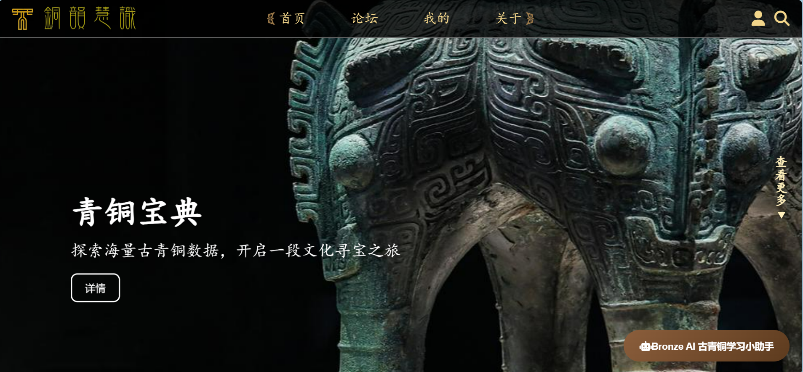
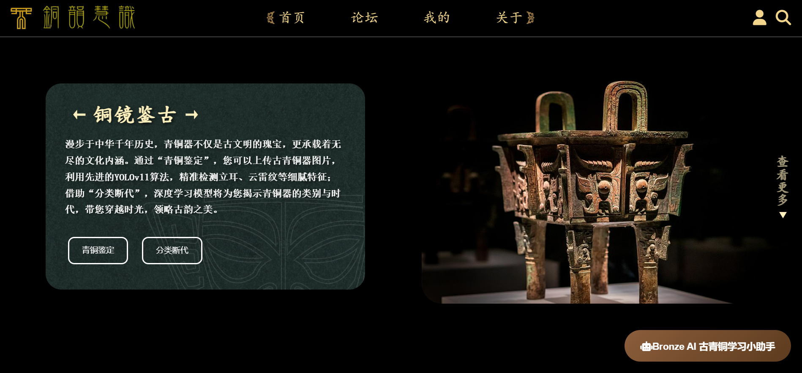
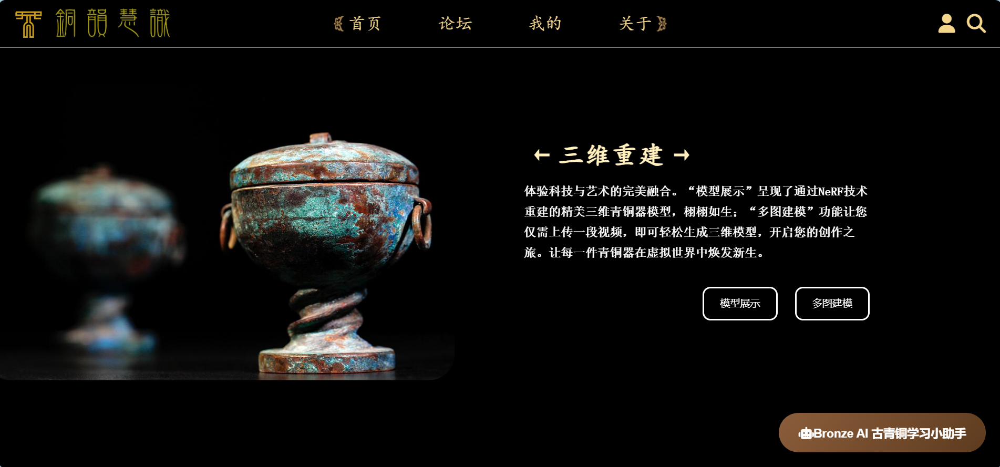

项目详情
铜韵慧识：古青铜智能鉴定与学习平台
项目简介
通过 AI 技术赋能古青铜鉴定与学习，平台包含铜镜鉴古、青铜宝典、深入青铜、三维重建四个模块，同时构建了交流社区， 支持发帖、点赞、收藏，并接入大模型功能。该项目为国家级创新创业项目，我担任项目负责人，项目成果已用于课堂教学。



技术栈
前端：Vue、HTML5、CSS3、JavaScript
后端：Express、Flask、MySQL
其他：Nginx、Docker
主要职责
- 设计并实现古青铜分类断代算法、纹饰特征检测算法和 NeRF 重建算法。
- 完成青铜器图像及标签数据的爬取与清洗，整理出 10956 张图像标签数据。
- 设计 15 张数据库表，支撑算法结果、青铜器资料、大模型输入输出以及社区互动数据的持久化。
- 使用 Flask 部署分类断代算法服务，使用 Express 部署其余业务服务。
- 使用 Nginx 进行反向代理并按 CORS 规范配置网关，确保前端可稳定访问后端接口。